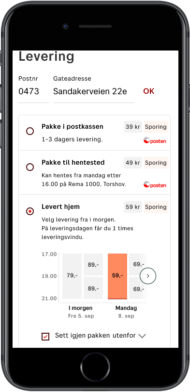

To provide your customers with the best possible shopping experience in your e-commerce store, we recommend displaying relevant delivery information at checkout. Based on user research and testing, we have developed a best practice for presenting the most common B2C delivery methods in a webshop checkout. Our recommended e-commerce delivery services are:
By offering these delivery options with additional services, your customer are able to select the delivery method best suited their needs. The best practice examples can be populated by using the Shipping Guide 2.0 and Pickup Point APIs.
Get our three shipping services into checkout fast and easy without using our APIs.
Log into Widget configurator. Here you can fill out your store settings and create widgets. To get widgets into your web shop, add the configuration and script tag that is generated from creating widgets to your web page (detailed description follows when you create widget).
The illustration show Package to mailbox, but all delivery options should have the same basic information
To get more precise estimated time of arrival and relevant pick up locations, customer needs to fill out postal code. If you use our API you will get validation and postal place for the field.
Some postal areas are split into several delivery zones, which impacts the delivery estimates. If the additional service for home delivery should work properly, customer need to fill out their street address. The delivery options should have an overlay to prompt user to fill out postal code and street address. This will be removed when both is provided.
We suggest these titles:
Offer fixed shipping price on all delivery options. Subsidized or free freight is one of the most powerful tool for increasing conversion. Subsidize all shipping methods equally so that the customer can pick the shipping method that best fits their needs, without price incentives overweighing a particular shipping method.
Customers prefer to track their package. Mark the all delivery options that have tracking with a tracking label.
A short line that give more information about the delivery method. Each delivery method have their own recommended text depending on additional services you offer. The illustration show an example when all additional services are offered.
See each service to get more details.
Pakke i postkassen
Pakke til hentested
Pakke levert hjem
Customer prefer to know what transporter the web shop use. Use the Posten logo for B2C shops and Bring logo for B2B shops.
Let your customers know when their package will arrive, and you are relieving them of one of the biggest pains of online shopping. Therefore, it is best practice to always show an estimate for when the customer can expect their package. How it should be displayed depends if address is known, the delivery option and additional services you offer. See each service to get more details.
Tips for implementing ETA
Pakke i postkassen
Pakke til hentested
Pakke levert hjem